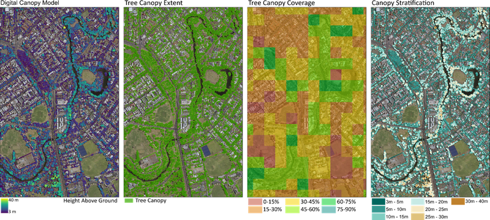
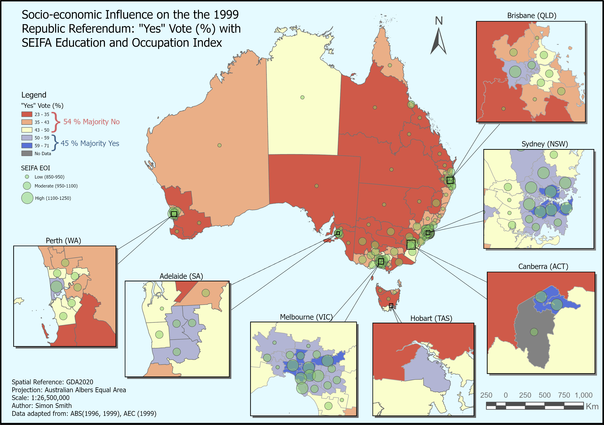
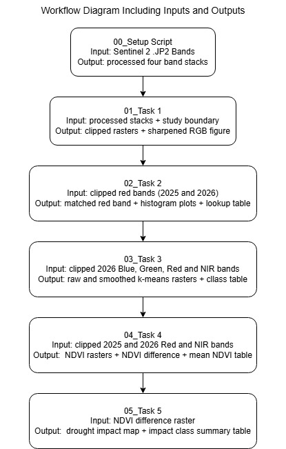

GIS Workflows
AerisAg uses structured GIS workflows to organise spatial data, check coordinate systems, prepare imagery, analyse patterns and produce client-ready deliverables.
Spatial Analysis, Precision Mapping and Agricultural Data
GIS mapping is a core part of the AerisAg business concept. AerisAg brings a strong understanding of GIS principles, spatial workflows, remote sensing and practical land management applications. GIS is used to turn drone and satellite imagery into accurate, meaningful and usable information.
Rather than providing clients with images only, AerisAg focuses on creating spatial data, maps, analysis outputs and clear deliverables that can support real decisions. This includes mapping vegetation condition, land change, weeds, drainage patterns, site boundaries and areas requiring further investigation.

AerisAg uses structured GIS workflows to organise spatial data, check coordinate systems, prepare imagery, analyse patterns and produce client-ready deliverables.
Satellite imagery supports large-area monitoring and seasonal comparison, while drone imagery provides higher-detail site information for local investigation and reporting.
Accurate GPS data and spatial workflows support reliable mapping for property planning, treatment zones, field inspection and repeat monitoring.
Multispectral analysis can help investigate vegetation condition, crop stress, weeds, waterlogging and drought impact using evidence from imagery.

AerisAg focuses on data and evidence, not only attractive imagery. GIS analysis can include measurements, classification, area calculations, comparison between dates and statistical summaries. These outputs help turn imagery into practical information that can be used for reporting, planning and land management decisions.
Deliverables may include labelled maps, spatial data files, PDF reports, tables, summaries, screenshots, boundary layers, paddock maps, treatment zones, access tracks and recommendations based on the evidence found in the mapping workflow.
Mapping workflows are completed in-house and locally, allowing clients to communicate directly with the person completing the mapping and analysis rather than dealing with a separate external processing company. This supports clearer communication, better quality control and outputs suited to the specific site and decision being made.
AerisAg does not only provide imagery. The business also aims to provide maps, spatial files and practical data products that can be used for future farm operations, planning and analysis. This is important because landholders often need mapping outputs that can support real work on the ground, not just visual examples.
These outputs may include boundary maps, treatment zones, paddock maps, vegetation areas, weed locations, drainage areas, access tracks and other spatial layers. These files can help landholders plan future work, compare changes over time and keep a digital record of property conditions.

AerisAg mapping can support on-farm technologies such as auto-steer tractors, GPS equipment, variable-rate systems and digital farm mapping. Spatial data can assist with targeted weed control, spraying plans, paddock monitoring and future farm operations.
AerisAg can assist landholders who already own drones by helping with drone setup, mapping workflows, data capture planning, image organisation and GIS processing.